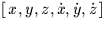
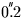
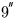

| IY | I | year |
|---|---|---|
| ID | I | day in year (1 = Jan 1st) |
| FD | R | fraction of day |
| PV | R(6) | Moon , mean equator and equinox of date (AU, AU s-1) |
|---|
 per hour in longitude,  and
per hour in latitude, 350 km and 2 metres per second in distance.) Note that the distance accuracy is comparatively poor because this routine is principally intended for computing topocentric direction.
SLALIB --- Positional Astronomy Library